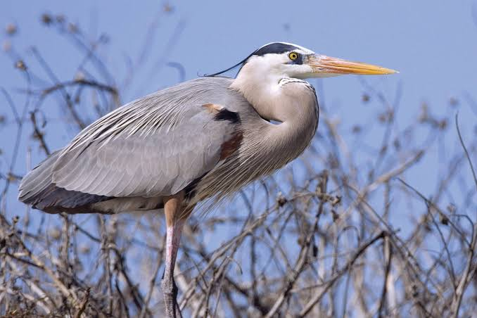

Heron
Birds
The herons are long-legged freshwater and coastal birds in the family Ardeidae, with 64 recognised species, some of which are referred to as egrets or bitterns rather than herons.
Family: Ardeidae; Leach, 1820
Scientific name: Ardeidae
Height: Goliath heron: 1.2 – 1.5 m
Class: Aves
Wingspan: Grey heron: 1.6 – 2 m, Great egret: 1.3 – 1.7 m, Goliath heron: 1.8 – 2.3 m, Little bittern: 40 – 58 cm
Mass: Grey heron: 1 – 2.1 kg, Great egret: 0.7 – 1.5 kg, Goliath heron: 4 – 5 kg, Little bittern: 59 – 150 g
Heron, any of about 60 species of long-legged wading birds, classified in the family Ardeidae (order Ciconiiformes) and generally including several species usually called egrets. The Ardeidae also include the bitterns (subfamily Botaurinae).
Herons are widely distributed over the world but are most common in the tropics. They usually feed while wading quietly in the shallow waters of pools, marshes, and swamps, catching frogs, fishes, and other aquatic animals. They nest in rough platforms of sticks constructed in bushes or trees near water; the nests usually are grouped in colonies called heronries.
Herons commonly stand with the neck bent in an S shape. They fly with the legs trailing loosely and the head held back against the body, instead of stretching the neck out in front as most birds do.
They have broad wings, long straight sharp-pointed bills, and powder downs; the latter are areas of feathers that continually disintegrate to a fine powder which is used for preening (absorbing and removing fish oil, scum, and slime from the plumage).
Herons are subdivided into typical herons, night herons, and tiger herons. Typical herons feed during the day. In breeding season some develop showy plumes on the back and participate in elaborate mutual-courtship posturing.
Best known of the typical herons are the very large, long-legged and long-necked, plain-hued, crested members of the genus Ardea—especially the 130-cm (50-inch) great blue heron (A. herodias) of North America, with a wingspan of 1.8 metres (6 feet) or more, and the similar but slightly smaller gray, or common, heron (A. cinerea), widespread in the Old World.
Largest of all is the goliath heron (A. goliath) of Africa, a 150-cm (59-inch) bird with a reddish head and neck. The purple heron (A. purpurea) is a darker and smaller Old World form.
Biology of Heron
Distribution and habitat
The herons are a widespread family with a cosmopolitan distribution. They exist on all continents except Antarctica, and are present in most habitats except the coldest extremes of the Arctic, extremely high mountains, and the driest deserts.
Almost all species are associated with water; they are essentially nonswimming waterbirds that feed on the margins of lakes, rivers, swamps, ponds, and the sea. They are predominantly found in lowland areas, although some species live in alpine areas, and the majority of species occurs in the tropics.
The herons are a highly mobile family, with most species being at least partially migratory. Some species are partially migratory, for example, the grey heron, which is mostly sedentary in Britain, but mostly migratory in Scandinavia.
Birds are particularly inclined to disperse widely after breeding, but before the annual migration, where the species is colonial, searching out new feeding areas and reducing the pressures on feeding grounds near the colony. The migration typically occurs at night, usually as individuals or in small groups.
Diet
The herons and bitterns are carnivorous. The members of this family are mostly associated with wetlands and water, and feed on a variety of live aquatic prey. Their diet includes a wide variety of aquatic animals, including fish, reptiles, amphibians, crustaceans, molluscs, and aquatic insects.
Individual species may be generalists or specialise in certain prey types, such as the yellow-crowned night heron, which specialises in crustaceans, particularly crabs Many species also opportunistically take larger prey, including birds and bird
eggs, rodents, and more rarely carrion. Even more rarely, herons eating acorns, peas, and grains have been reported, but most vegetable matter consumed is accidental.
Breeding
While the family exhibits a range of breeding strategies, overall, the herons are monogamous and mostly colonial. Most day herons and night herons are colonial, or partly colonial depending on circumstances, whereas the bitterns and tiger herons are mostly
solitary nesters. Colonies may contain several species, as well as other species of waterbirds. In a study of little egrets and cattle egrets in India, the majority of the colonies surveyed contained both species.
Nesting is seasonal in temperate species; in tropical species, it may be seasonal (often coinciding with the rainy season) or year-round. Even in year-round breeders, nesting intensity varies throughout the year. Tropical herons typically have only one breeding season per year, unlike some other tropical birds which may raise up to three broods a year.
Courtship usually takes part on the nest. Males arrive first and begin the building of the nest, where they display to attract females. During courtship, the male employs a stretch display and uses erectile neck feathers; the neck area may swell.
The female risks an aggressive attack if she approaches too soon and may have to wait up to four days. In colonial species, displays involve visual cues, which can include adopting postures or ritual displays, whereas in solitary species, auditory cues,
such as the deep booming of the bitterns, are important. The exception to this is the boat-billed heron, which pairs up away from the nesting site. Having paired, they continue to build the nest in almost all species, although in the little bittern and least bittern, only the male works on the nest.